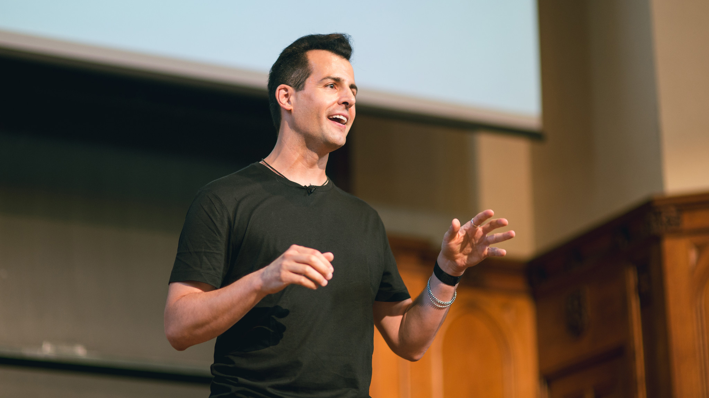
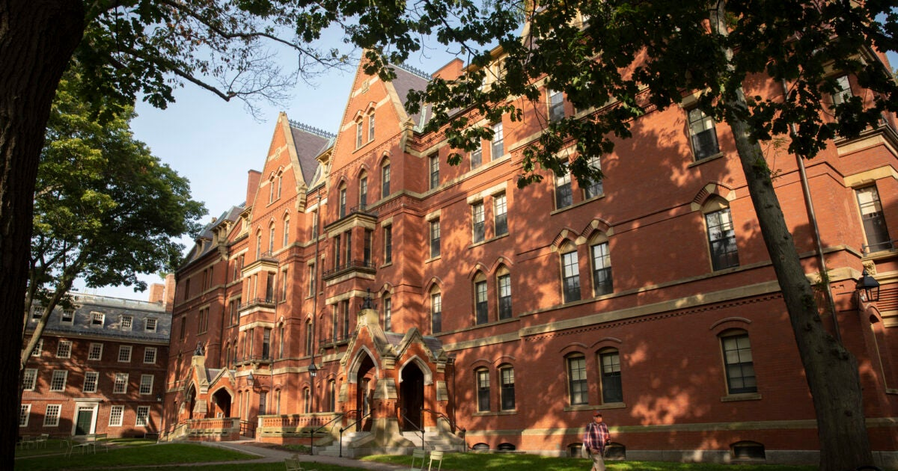

O Curso mais famoso de Harvard
Introdução à Ciência da Computação de Harvard, mais conhecido como CS50, é o maior curso do campus de Harvard e mais de 2.000.000 alunos em todo o mundo. Estamos abertos a alunos de todas as origens que desejam explorar ciência da computação, desenvolvimento de aplicativos e jogos para dispositivos móveis, tecnologias de negócios e a arte da programação.

David J. Malan é um cientista da computação e professor americano. Malan é professor de ciência da computação na Universidade de Harvard e é mais conhecido por ministrar o curso CS50, que é o maior curso de aprendizado aberto da Universidade de Harvard e da Universidade de Yale e o maior curso on-line aberto massivo da EdX, com palestras sendo visualizadas por mais de um milhão de pessoas na plataforma.
Com a duração de 12 semanas, é abordado diversos temas da ciência da cumputação, com linguagens como o C, Python, SLQLite, HTML, CSS e frameworks populares como Flask. O CS50x prepara o aluno para se aprofundar mais ainda no universo da computação e programação.
